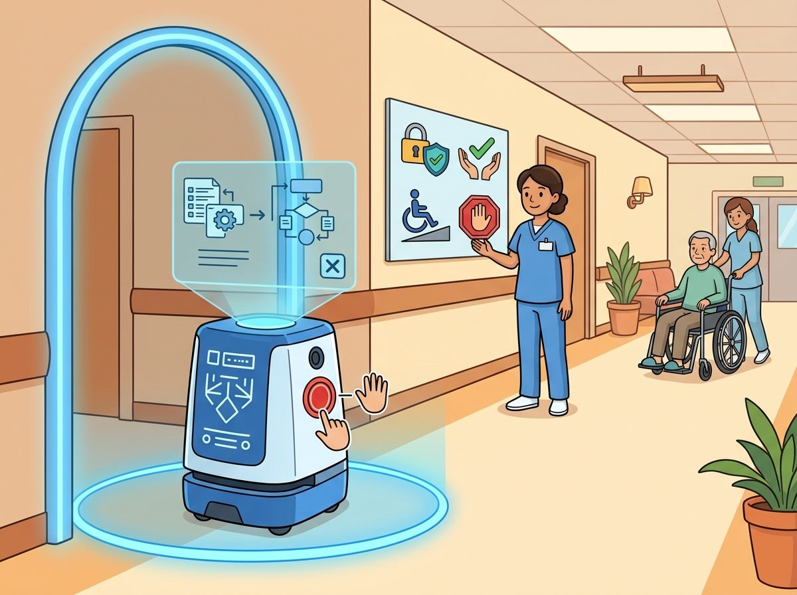
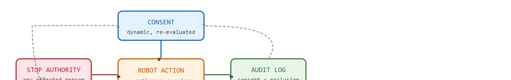
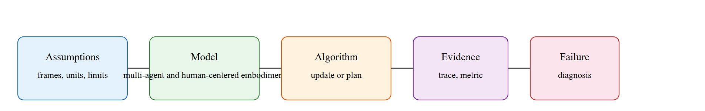

A robot cannot apologize its way out of a data-retention policy.
A Data-Retention Policy

This section assumes familiarity with human-robot trust and intervention from section 50.5. The ethical design principles introduced here are operationalized further in section 54.5 (consent boundaries and safety requirements) and section 55.4 (deployment logging and audit artifacts). Readers working on fairness and robustness under distribution shift will find a complementary treatment in section 53.1.
A care robot enters a resident's room, records audio to detect a fall, and sends that clip to a remote server. Nobody asked. Nobody can stop it. The resident does not know the data exists. As embodied AI moves into hospitals, homes, and schools, harms like this are no longer hypothetical. They are shipping features. Ethics in HRI is not a philosophical overlay; it is a design constraint that must be visible in the same artifact as the action loop: who consents, what is retained, who can audit it, and who can stop the system. By the end of this section you will be able to translate abstract principles into concrete interface requirements, logged exclusion metrics, and stop conditions that can be tested and traced.
A care robot's microphone runs through the night, its depth camera watches a resident dress, and its odometry quietly maps a daily routine: in embodied AI the question is never whether sensitive data is collected, but whether anyone can see it, consent to it, or stop it. Ethics in human-robot interaction (HRI), the study of how people and robots share space, tasks, and authority, becomes useful only when it is tied to a named interface, a replayable scenario, a failure diagnostic, and an artifact that records what changed in the action loop.
The key question is practical: Who is affected, what data is collected, what action can harm them, and who can inspect or stop the system?
Figure 50.6A makes the core design demand visible: the same system that acts in public must also expose who can consent, intervene, audit, and shut it down. Figure 50.6B renders this as a control loop, showing how consent, robot action, audit, harm check, and stop authority connect and feed back into one another.

A representation earns its place when it changes the measurable action interface. In ethical concerns, the reader should keep asking which decision becomes easier, safer, or more reliable.
For Ethical concerns, the practical design rule is to make the interface inspectable before optimization begins: inputs, outputs, units, latency, bounds, and failure labels should all be visible in the saved artifact.
The mechanism in Ethical concerns is the contract between representation and action. Name what enters the module, what leaves it, which assumptions make that transformation valid, and which log would reveal a bad handoff.
Consider a care robot that records speech and movement to provide assistance. The system needs consent boundaries, data minimization, bias checks, transparent fallbacks, and human escalation.
Data minimization matters in embodied AI because robots operate continuously in intimate spaces. A care robot's microphone runs during sleep. Its depth camera captures body posture during dressing. Its odometry logs the resident's daily routine. Every retained byte creates a future attack surface, risks a regulatory violation, and preserves an irreversible record of a person's most private moments. A web service can pause collection; a robot cannot stop sensing without abandoning its task. Consider the scale. A single Intel RealSense D435i running at 30 fps for one 8-hour shift produces roughly 250 GB of raw depth frames before any compression. Every hour of inaction on a data-minimization policy adds another 30 GB of intimate behavioral record that no one can un-collect. Policy-layer restrictions are not enough. The system must enforce data limits at the hardware interface, before any network path exists.
So far: embodied ethics differs from web-service ethics because the sensor cannot pause itself, the volume of intimate data is large and continuous, and policy documents alone cannot stop collection, so the next paragraphs turn that constraint into four concrete enforcement gates.
Mechanically, data minimization works by applying four gates in order: resolution reduction (downsample before feature extraction), on-device feature extraction followed by raw frame deletion, time-bounded retention with automatic expiry, and purpose binding (tagging each retained snippet with the single task it was collected for, and rejecting any request that asks it to serve a different task) that blocks using a fall-detection audio clip for any query other than fall detection. Each gate reduces the exploitable surface while leaving the task signal intact.
Consider a concrete case. Stevie II, a socially assistive robot trialed in a care home (Trinity College Dublin, 2019), collected audio within a 1.5 m interaction radius. Designers set three explicit constraints: retention capped at 72 hours, on-device deletion of speaker-identification features before any cloud upload, and a physical mute button with an LED indicator visible from 3 m. When a resident did not press consent on the tablet prompt within 10 seconds, the robot defaulted to gesture-only mode and logged the timeout as an exclusion event. That log produced a measurable proxy: the exclusion rate across resident groups. In the first week, residents over 85 showed a 34% exclusion rate against 12% for residents aged 65 to 84, which flagged an accessibility gap in the tablet prompt font size. One configuration change fixed it, and the log artifact made the cause traceable. Without the logged exclusion metric, the disparity would have stayed invisible. This is the practical force of what designers call ethics as a measurement contract. Stated only in policy documents, the same principle went unaddressed for three prior deployments. Stated as a logged metric with a threshold, a team caught and fixed it in seven days.
# Simulate an HRI consent-and-exclusion audit: track per-group consent rates
# and flag accessibility gaps when exclusion exceeds a threshold
import numpy as np
rng = np.random.default_rng(42)
# Resident groups and their simulated consent-prompt response probabilities
groups = {
"age_65_to_84": 0.88, # 88% respond within timeout
"age_85_plus": 0.66, # 66% respond; font/accessibility gap
}
N_RESIDENTS = 200 # residents per group in the trial week
EXCLUSION_THRESHOLD = 0.20 # flag any group above 20% exclusion
TIMEOUT_SECONDS = 10 # seconds before robot defaults to gesture-only
audit_log = []
for group, p_respond in groups.items():
# Bernoulli trial: did the resident respond in time?
responded = rng.random(N_RESIDENTS) < p_respond
n_consented = responded.sum()
n_excluded = N_RESIDENTS - n_consented
exclusion_rate = n_excluded / N_RESIDENTS
status = "OK" if exclusion_rate <= EXCLUSION_THRESHOLD else "FLAGGED"
audit_log.append({
"group": group,
"consented": int(n_consented),
"excluded": int(n_excluded),
"exclusion_rate": round(exclusion_rate, 3),
"status": status,
})
print(f"{'Group':<20} {'Consented':>10} {'Excluded':>9} {'Rate':>6} Status")
print("-" * 58)
for row in audit_log:
flag = " <- accessibility gap detected" if row["status"] == "FLAGGED" else ""
print(f"{row['group']:<20} {row['consented']:>10} {row['excluded']:>9} "
f"{row['exclusion_rate']:>6.1%} {row['status']}{flag}")Group Consented Excluded Rate Status ---------------------------------------------------------- age_65_to_84 176 24 12.0% OK age_85_plus 132 68 34.0% FLAGGED <- accessibility gap detected
Trace the four-stage review loop on one concrete event. A care robot's microphone captures a 6-second audio clip at 16 kHz to detect a fall.
{event: fall_check, raw_deleted: true, bytes_out: 48, expiry_h: 72, purpose: fall_only}. ($\epsilon_1$ and $\epsilon_2$ are per-channel risk budgets; the full constraint they belong to, together with the matching $\epsilon_3$ for exclusion, is stated later in this section under Formal Object.)The same clip that started as 192 KB of intimate audio leaves the device as 48 bytes of single-purpose features with a deletion clock attached. The artifact in the last line is what a later auditor reads, not the prose.
Think of a recipe that says "add salt to taste." That instruction is a principle, not a contract: ten cooks will produce ten different dishes and nobody can audit why. The moment the recipe says "add 4 g of salt, taste at the 3-minute mark, and adjust by 1 g if the broth reads flat on a calibrated strip," it becomes testable and reproducible. Ethics as a measurement contract works exactly the same way: the principle "respect privacy" is the "add salt to taste" version, while "cap retention at 72 hours, log every deletion event, and page the on-call engineer when the exclusion rate crosses 20 percent" is the calibrated recipe that a team can follow, audit, and fix.
When logging consent and exclusion events in ROS 2, publish them to a dedicated /ethics_events topic with a stamped message type (e.g., std_msgs/msg/String carrying JSON) rather than writing directly to a file. This lets you replay the ethics event stream with ros2 bag play alongside sensor data, making it straightforward to correlate a consent timeout with the robot's exact pose and sensor readings at that moment. Set the Quality of Service (QoS) reliability to RELIABLE and durability to TRANSIENT_LOCAL so late-joining subscribers (such as an audit dashboard) receive buffered events without gaps. Without these QoS settings, events emitted during startup or shutdown are silently dropped, leaving holes in the audit record that are impossible to reconstruct after the fact.
Intuitive Surgical's da Vinci systems log full kinematic and video streams of every procedure, raising exactly the retention-and-consent tension this section formalizes. The Case Insights data platform applies on-device de-identification and purpose-bound retention so motion analytics can improve surgeon training without exporting patient-identifiable video. The ethics constraints (privacy bound, purpose binding, audit log) are enforced as pipeline gates rather than a policy memo, mirroring the four-gate minimization pattern above.
The hand-built fragment names a step in about 12 lines. In practice, use deployment checklists, ROS 2 event logging, access controls, and human-study protocols; the tools enforce reviewable procedures while the small version keeps the ethical object of concern visible.
/ethics_events with a stamped message so that consent timeouts, data-retention deletions, and fallback-mode activations appear alongside Inertial Measurement Unit (IMU) and odometry data in the same bag file and can be replayed for audit.The common mistake in Ethical concerns is to celebrate the component score before checking the closed-loop handoff. The failure usually appears at the boundary: stale state, wrong frame, delayed action, saturated actuator, or metric that ignores the real task cost.
A common assumption is that a single consent interaction at the start of a session covers all subsequent data collection by the robot. This is wrong in embodied AI because the robot operates continuously in the environment: the context changes (a visitor enters the room, the resident begins dressing, a private conversation starts) while the sensors keep running under the original consent. Unlike a web form, a physical robot cannot pause collection without abandoning its task. The correct mental model treats consent as a dynamic, context-sensitive contract that must be re-evaluated whenever the scene changes materially, and the system design must provide both the mechanism to detect those changes and an accessible way for any affected person to update or withdraw consent in real time.
An ethical deployment record should include consent state, data retained, access policy, affected user group, known limitations, intervention route, and incident review. Ethics becomes real when it changes engineering defaults.
Direction 1: Consent-aware data governance for always-on robots. As robots enter homes and clinics with continuous sensing, static one-time consent no longer covers dynamic scene changes. The 2024 work on "contextual integrity for embodied agents" (Airo et al., CMU Robotics Institute, 2024) (contextual integrity: the idea that data flows are appropriate only relative to the social context they were collected in, so a clip fine for fall detection is not automatically fine for any other use) formalizes when a robot should pause, renegotiate, or delete sensor streams based on scene-level context shifts, such as a visitor entering a room. This moves data governance from policy documents into the action loop itself.
Where the first direction asks who may observe the resident, the next asks whose values the robot internalizes from the data it is allowed to keep. Direction 2: Rater-diversity audits for robot reward models. Preference labels that train robot reward models encode the values of whoever rated the trajectories. When raters do not represent the deployment population, the learned objective can systematically disadvantage certain users, and in physical systems that shows up as unsafe motion rather than unhelpful text. The Stanford Human-Centered AI group (2024) pairs rater-demographic stratification with reward-model uncertainty decomposition for manipulation tasks, yielding an audit that emits a signed artifact instead of a qualitative review.
Auditing whose values shaped the policy only matters if a human can still intercept the policy as it runs, which is exactly where the next direction concentrates. Direction 3: Real-time intervention legibility under learned policies. As diffusion- and transformer-based robot policies (for example, pi0, Physical Intelligence, 2024) replace hand-coded controllers, operators lose the ability to predict what the robot will do next and therefore lose meaningful override authority. Active work at MIT CSAIL and Berkeley AUTOLAB in 2024-2025 examines how to expose learned-policy intent in real time through legible motion previews and uncertainty-band visualizations so that the human supervisor retains genuine, not merely nominal, stop authority.
Open problem for a PhD student: No validated protocol currently exists for measuring whether a human's real-time intervention is genuinely informed (the operator understood the robot's next intended action before overriding) versus reflexive (the operator pressed stop because motion looked wrong without understanding why). Designing a behavioral experiment that separates these two cases, and linking the result to an interface design specification, is a tractable and practically important dissertation contribution.
Can you name the observation, state estimate, action, success metric, and most likely failure mode for ethical concerns? If not, the system boundary is still too vague.
Ethical concerns becomes useful when it is tied to a closed-loop contract for Human-Robot Interaction. The contract names the participants, observations, action authority, timing budget, logging artifact, and recovery rule. Without that contract, a system can look capable in a notebook while failing the first time a partner delays, a person corrects it, or a deployment scene changes.
Recap: an ethics claim is worth trusting only when its evidence lives in the same replayable artifact as the action it constrains.
For Ethical concerns, separate the conceptual claim, the systems claim, and the evidence claim. A plausible mechanism, a clean interface, and a closed-loop result are different claims; the section should keep their evidence separate.
| Tool or Library | Role in the Topic | Builder Advice |
|---|---|---|
| ROS 2 | Ethical concerns | Represent robot state, alerts, and operator commands with inspectable interfaces. |
| LeRobot | Ethical concerns | Collect and replay human demonstrations for feedback and shared-autonomy studies. |
| MuJoCo | Ethical concerns | Prototype risky interaction policies before any human-facing trial. |
| Gymnasium | Ethical concerns | Build small decision tasks that isolate trust, intent, or feedback mechanisms. |
| PettingZoo | Ethical concerns | Model mixed human-robot roles as interacting agents when turn order matters. |
For Ethical concerns, the baseline and maintained-tool version should produce the same artifact schema and run on one task panel. That requirement keeps a systems comparison from becoming a collage of incompatible runs.
When Ethical concerns fails, avoid labeling the whole method as weak. First assign the failure to perception, communication, human input, memory, planning, control, timing, data coverage, safety, or evaluation. Then rerun one controlled perturbation that isolates the suspected cause. This pattern turns a disappointing rollout into a reusable diagnostic asset.
The 42-agent production pass treats ethical concerns as a buildable system, not a definition. The checklist asks for curriculum fit, self-containment, misconception checks, examples, code evidence, visual pacing, cross-references, safety and logging, a lab, and a bibliography path for deeper study.
For Ethical concerns, connect HRI design to whole-body control, language guidance, teleoperation data, safety review, and deployment logging through one interaction transcript.
A common misconception is that ethics is a final review after the robot works. The diagnostic question is: which design choice changed because a user could be harmed or excluded?
Draft an HRI risk register for one scenario. Include user groups, data types, hazard, mitigation, logging, and escalation owner.
A robot cannot apologize its way out of a data-retention policy.
Ethical concerns needs a topic-native core: variables, equations or system contracts, an algorithmic procedure, an expected output, and a failure diagnosis. Figure 50.6.T summarizes the chain this section must preserve when moving from a teaching example to a real embodied system.

$\min_\pi \mathbb E[\ell_{\mathrm{task}}] \quad \text{subject to} \quad \mathbb E[\ell_{\mathrm{privacy}}]\le \epsilon_1,\ \mathbb E[\ell_{\mathrm{harm}}]\le \epsilon_2,\ \mathbb E[\ell_{\mathrm{exclusion}}]\le \epsilon_3$
Ethical concerns become operational when they are translated into constraints, audit artifacts, and escalation policies. Embodied systems can cause physical, social, and informational harm at the same time, which is why ethics has to enter during design rather than after deployment.
| Risk | Design Lever | Evidence Artifact |
|---|---|---|
| Privacy leakage | On-device processing, retention limits, masking. | Data-flow map and deletion log. |
| Accessibility exclusion | Alternative interfaces, multimodal cues. | User-group coverage matrix. |
| Physical harm | Speed caps, force limits, stop logic. | Hazard analysis and incident replay. |
| Manipulative persuasion | Disclosure and consent controls. | Interaction transcript audit. |
Manipulative persuasion is the risk that a robot's social presence (a friendly voice, an anthropomorphic gaze, a plausible-sounding apology) is used to extract compliance or data that a person would not have given to a plain interface asking the same question. The design lever is the same disclosure-and-consent machinery already described for data collection: any prompt that trades on social pressure rather than plain information must be logged and reviewable, exactly like a consent timeout, so a reviewer can distinguish a persuasive nudge from an informed choice after the fact.
A consent form signed once is a receipt, not a contract; the receipt does not update when the scene does.
This output matters because it creates accountability. An ethics paragraph without a named owner is not a control surface. A serious embodied deployment should be able to point from each risk to the code path, operating procedure, or launch gate that addresses it.
Ethics work fails when it stays qualitative while the system is quantitative. Force the team to name measurable proxies, owners, and rollback conditions; otherwise known risks will remain visible in prose but invisible in the deployment pipeline.
Consent architecture fails under time pressure. In Amazon Astro home deployments (2022), users reported that the wake-word detection activated during private conversations at roughly 4% of ambient noise events, bypassing the intentional-activation model the consent UI described. In this case the retention and deletion rules appear to have worked largely as designed, so the failure is better characterized as a mismatch between the threat model assumed at consent time (deliberate activation) and the actual activation distribution (acoustic false positives). This is the operational pattern to test: enumerate every way the system can collect data or act without the user's initiating the interaction, then ask whether the consent model still holds under those conditions.
Ethical HRI turns values into inspectable engineering constraints and reviewable logs.
Design a method-matched experiment for Ethical concerns. Specify the environment, observation schema, action interface, metric, and one perturbation that targets the section's core assumption.
Dragan, A. D., Lee, K. C. T., and Srinivasa, S. S. Legibility and Predictability of Robot Motion. HRI, 2013.
Use for motion that communicates intent rather than merely reaching the goal.
Goodrich, M. A. and Schultz, A. C. Human-Robot Interaction: A Survey. Foundations and Trends in Human-Computer Interaction, 2007.
Use for HRI vocabulary, autonomy levels, and human factors framing.
Beginner (weekend): Consent audit dashboard in Gymnasium. Build a single-room Gymnasium environment where a simulated agent must request consent before accessing each zone; log every consent grant, denial, and timeout to a CSV and plot per-group exclusion rates. The key challenge is designing a reward signal that penalizes task completion achieved by bypassing the consent check rather than by receiving it.
Intermediate (1-2 weeks): Ethics-event stream for a MuJoCo care-robot sim. Extend a MuJoCo humanoid or mobile-manipulator model to publish a /ethics_events ROS2 topic that logs approach speed, sensor activation state, and consent mode on every timestep; replay the bag file and write a pytest fixture that fails the run if any frame violates a configurable exclusion-rate threshold. The key challenge is keeping the ethics monitor decoupled from the control policy so the logging layer survives policy swaps without modification.
Intermediate (1-2 weeks): Preference-rater diversity audit with LeRobot. Collect a small teleoperation dataset using LeRobot on a low-cost arm, recruit two demographically distinct rater groups to label trajectory quality, train a reward model on each group's labels separately, and measure the divergence in ranked trajectory order between the two models. The key challenge is designing a comparison metric that isolates rater-group effects from noise introduced by the small dataset size.
Continue to Chapter 51: Open-World and Novelty-Robust Embodiment, where this contract becomes the input to the next embodied capability.